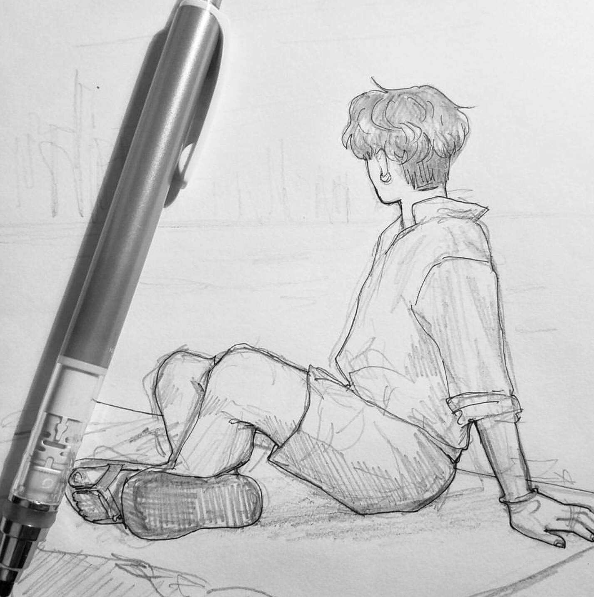
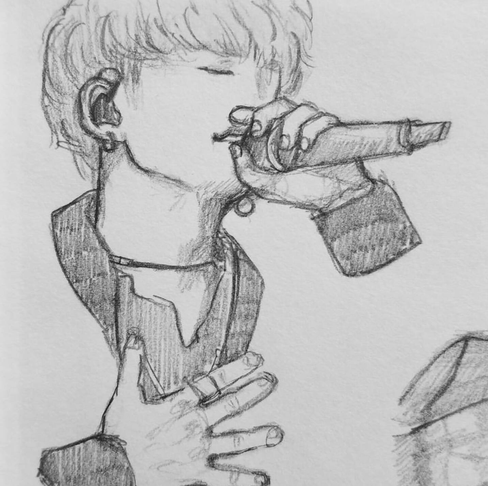
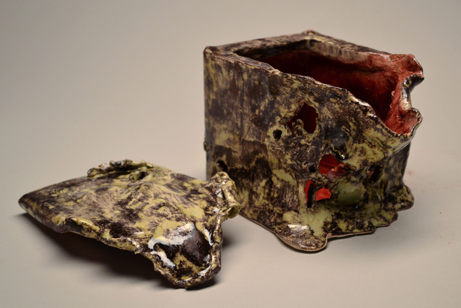
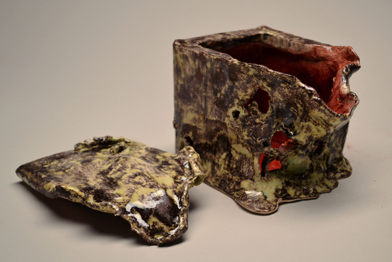
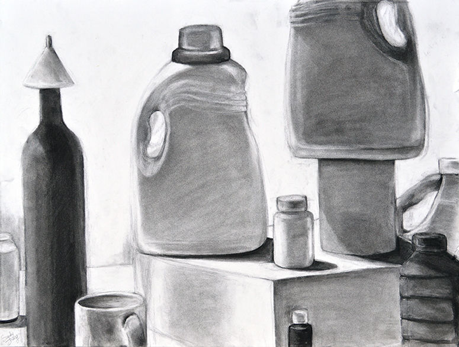

The thing that I enjoy doing in my free time is art. Specifically, I like to draw both traditionally (which is on paper) and digitally (using a drawing tablet) that I connect to my laptop). Drawing people is my favorite so that's what I spend my time doing. I draw both realistically and in a stylized manner (which is interesting to see the changes throughout the years). I have images of my drawings below.
 Outside of drawing people I also go to the Fine Arts Center and make art there. The Fine Arts Center is really amazing and I am honored to be there for two hours of my school days. I am in the Visual Arts Department there and they offer six classes, one per semester: 2D and 3D Design, Metals, Photography, Drawing and Painting, and the new addition of Fibers. All of the teachers are very kind and dedicated and the projects are always interesting. I've attended the Fine Arts Center for two years already and I am looking forward to this year as well. Below are some pictures of art that I have made.
 

I started drawing when I was very young and I have always enjoyed drawing. There's something exciting about being able to transfer an idea from your head and down onto paper. Not only this, but I have made a lot of amazing friends because of this hobby of mine. I'm also glad to be part of the vast art community on Instagram and have some really talented and sweet mutual followers. Just being in the art community has helped me become very open-minded as well and I'm forever thankful. Overall, there has been a positive impact on me from doing art.

Art is really important to me in general. From the friends I've made to the skills that I have harbored from it, art has helped shape who I am. It helps me relieve stress, though it can give me some as well, and makes my life more exciting. It gives me something to put effort into and that's really important. Putting effort into art helps me put effort into other things in my life.
By Wen Z.